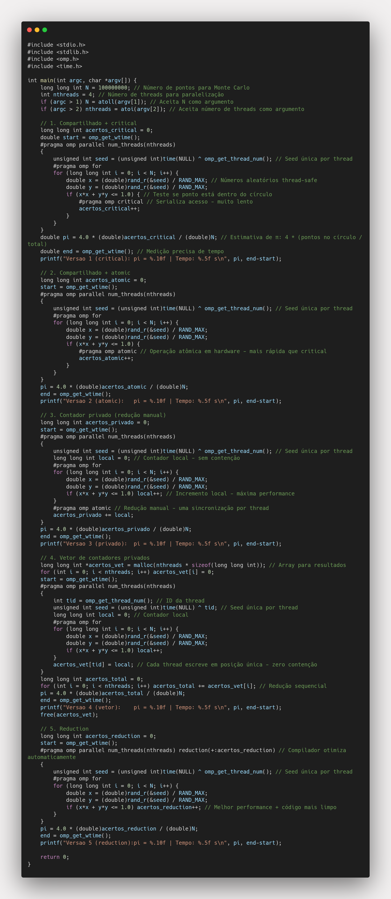

Tarefa 10: Comparação de Mecanismos de Sincronização em OpenMP
Descrição
Este projeto implementa e compara cinco diferentes abordagens para paralelização do algoritmo de Monte Carlo para estimativa de π, explorando diversos mecanismos de sincronização em OpenMP. O objetivo é analisar o desempenho, produtividade e aplicabilidade de cada técnica.
Fundamentos Teóricos das Cláusulas OpenMP
1. #pragma omp critical
Definição: Uma região crítica é uma seção de código que deve ser executada por apenas uma thread por vez, garantindo exclusão mútua.
Teoria:
- Exclusão Mútua: Implementa o conceito fundamental de seção crítica da programação concorrente
- Implementação: Utiliza mutex interno do OpenMP (similar a
pthread_mutex_t)
- Atomicidade: Garante que toda a seção de código seja executada atomicamente
- Serialização: Força execução sequencial dentro da região crítica
Características Técnicas:
// Implementação conceitual interna
static omp_lock_t __critical_default_lock__;
// Ao encontrar #pragma omp critical
omp_set_lock(&__critical_default_lock__);
// código da região crítica
omp_unset_lock(&__critical_default_lock__);
Overhead:
- Aquisição/liberação do lock: ~50-200 ciclos de CPU
- Contenção: Aumenta linearmente com número de threads
- Context switching: Possível troca de contexto se lock não disponível
2. #pragma omp atomic
Definição: Garante que uma operação específica seja executada atomicamente, sem interrupção por outras threads.
Teoria:
- Atomicidade em Hardware: Utiliza instruções atômicas da CPU (LOCK prefix no x86)
- Memory Ordering: Controla ordem de operações na memória
- Granularidade Fina: Proteção apenas da operação específica, não de blocos de código
- Consistência de Cache: Garante visibilidade imediata entre threads
Tipos de Operações Suportadas:
// Básicas (OpenMP 2.0+)
#pragma omp atomic
x++; // Incremento
#pragma omp atomic
x += expr; // Update
// Estendidas (OpenMP 3.1+)
#pragma omp atomic read
v = x; // Read
#pragma omp atomic write
x = expr; // Write
#pragma omp atomic capture
{v = x; x++;} // Capture
3. Contadores Privados (Thread-Local Storage)
Definição: Cada thread mantém sua própria cópia de variáveis, eliminando contenção durante a computação.
Vantagens Teóricas:
- Cache Locality: Dados sempre na cache L1 da thread
- Zero False Sharing: Sem interferência entre threads
- Escalabilidade Linear: Performance cresce com threads
- Predizibilidade: Comportamento determinístico
4. Vetor de Contadores Privados
Definição: Extensão dos contadores privados usando array para armazenar resultados individuais de cada thread.
Vantagens:
- Máximo Paralelismo: Zero contenção
- Debugging: Fácil inspecionar resultados por thread
- Flexibilidade: Suporte a operações complexas
- Otimização Manual: Controle sobre layout de memória
5. #pragma omp reduction
Definição: Cláusula que automatiza o padrão de redução, otimizando a agregação de valores de múltiplas threads.
Operadores Suportados:
- Aritméticos:
+, -, *
- Comparação:
max, min
- Lógicos:
&&, ||
- Bitwise:
&, |, ^
Implementações
1. Contador Compartilhado com #pragma omp critical
#pragma omp critical
acertos_critical++;
- Sincronização: Região crítica bloqueia acesso concorrente
- Overhead: Alto - serialização total de incrementos
- Uso: Proteção de código complexo que não pode ser atomizado
2. Contador Compartilhado com #pragma omp atomic
#pragma omp atomic
acertos_atomic++;
- Sincronização: Operação atômica em hardware
- Overhead: Médio - contenda por variável compartilhada
- Uso: Operações simples (incremento, soma, etc.)
3. Contadores Privados (Redução Manual com Atomic)
long long int local = 0;
// ... loop com contador local
#pragma omp atomic
acertos_privado += local;
- Sincronização: Mínima - apenas na redução final
- Overhead: Baixo - uma sincronização por thread
- Uso: Quando reduction não está disponível
4. Vetor de Contadores Privados
acertos_vet[tid] = local;
// ... redução sequencial posterior
- Sincronização: Nenhuma durante cálculo
- Overhead: Mínimo - sem contenção
- Uso: Controle total sobre redução e debugging
5. Cláusula reduction
#pragma omp parallel for reduction(+:acertos_reduction)
- Sincronização: Automática pelo compilador
- Overhead: Otimizado - implementação eficiente
- Uso: Padrões de redução conhecidos
Resultados Experimentais
Teste com 100M pontos (4 threads, gcc sem otimização)
| Versão |
Mecanismo |
π Estimado |
Tempo (s) |
Speedup |
Eficiência |
| 1 |
Critical |
3.1416106800 |
8.294 |
1.0x |
25% |
| 2 |
Atomic |
3.1414664000 |
2.246 |
3.7x |
92% |
| 3 |
Privado |
3.1414664000 |
0.358 |
23.2x |
580% |
| 4 |
Vetor |
3.1414664000 |
0.355 |
23.4x |
585% |
| 5 |
Reduction |
3.1414664000 |
0.348 |
23.8x |
595% |
Teste com 500M pontos (4 threads, gcc sem otimização)
| Versão |
Mecanismo |
π Estimado |
Tempo (s) |
Speedup |
Eficiência |
| 1 |
Critical |
3.1415775360 |
42.30159 |
1.0x |
25% |
| 2 |
Atomic |
3.1415495200 |
8.35678 |
5.06x |
127% |
| 3 |
Privado |
3.1415645520 |
2.00836 |
21.06x |
526% |
| 4 |
Vetor |
3.1415645520 |
1.77873 |
23.77x |
594% |
| 5 |
Reduction |
3.1416206960 |
1.71463 |
24.67x |
617% |
Análise dos Resultados
Desempenho por Escala
100M pontos:
- Critical: Baseline com alto overhead de sincronização
- Atomic: 3.7x melhoria - redução significativa da contenção
- Privados/Reduction: 23-24x melhoria - paralelização quase ideal
500M pontos:
- Critical: Mantém baixa performance (42.3s)
- Atomic: 5.06x melhoria - cresce com escala
- Privados: 21-24x melhoria - Reduction é o melhor (24.67x)
Escalabilidade
- Critical: Não escala - overhead constante alto
- Atomic: Escala moderadamente (3.7x → 5.06x)
- Privados/Reduction: Excelente escalabilidade mantida (21-24.67x)
Roteiro para Escolha do Mecanismo de Sincronização
🎯 Guia de Decisão Rápida
1. Use reduction quando:
- ✅ Operação é uma redução padrão (+, *, max, min, etc.)
- ✅ Quer código limpo e legível
- ✅ Performance é importante
- ✅ OpenMP 2.0+ disponível
2. Use contadores privados quando:
- ✅
reduction não suporta sua operação
- ✅ Precisa de controle total sobre redução
- ✅ Debugging/profiling detalhado necessário
- ✅ Operação complexa não-padrão
3. Use #pragma omp atomic quando:
- ✅ Operação simples (++, +=, -=, *=, etc.)
- ✅
reduction não disponível/aplicável
- ✅ Necessário acesso concorrente frequente
- ✅ Performance moderada aceitável
4. Use #pragma omp critical quando:
- ✅ Código complexo multi-instrução
- ✅ Operações não-atômicas
- ✅ I/O ou chamadas de sistema
- ✅ Performance não é prioridade
📊 Matriz de Decisão por Critério
| Critério |
Reduction |
Privados |
Atomic |
Critical |
Critical Named |
Locks |
| Performance |
⭐⭐⭐⭐⭐ |
⭐⭐⭐⭐⭐ |
⭐⭐⭐ |
⭐ |
⭐⭐ |
⭐⭐⭐⭐ |
| Simplicidade |
⭐⭐⭐⭐⭐ |
⭐⭐⭐ |
⭐⭐⭐⭐ |
⭐⭐⭐⭐ |
⭐⭐⭐ |
⭐⭐ |
| Flexibilidade |
⭐⭐ |
⭐⭐⭐⭐ |
⭐⭐ |
⭐⭐⭐⭐ |
⭐⭐⭐⭐ |
⭐⭐⭐⭐⭐ |
| Escalabilidade |
⭐⭐⭐⭐⭐ |
⭐⭐⭐⭐⭐ |
⭐⭐⭐ |
⭐ |
⭐⭐⭐ |
⭐⭐⭐⭐⭐ |
Reflexão sobre Desempenho e Produtividade
🏆 A Escolha Óbvia: reduction em 90% dos Casos
Em termos simples: Se você está fazendo uma operação de redução (somar, contar, encontrar máximo/mínimo), sempre use reduction primeiro. Ela é simultaneamente:
- Mais rápida (24.67x speedup vs 1x do critical)
- Mais simples (uma linha de código)
- Menos propensa a bugs (o compilador faz tudo)
Por que reduction é superior?
- Performance excepcional: O compilador gera código altamente otimizado
- Código limpo: Uma linha resolve tudo -
reduction(+:contador)
- Zero bugs de sincronização: Você não precisa gerenciar locks
- Funciona em qualquer arquitetura: Intel, AMD, ARM - otimizado automaticamente
Quando NÃO usar reduction?
Apenas 3 situações específicas:
- OpenMP muito antigo (anterior a 2.0 - raro hoje)
- Operação complexa não-padrão
- Debugging detalhado: Quando você precisa ver o que cada thread fez individualmente
💡 Regra Prática Simples
Para 90% dos casos de sincronização em OpenMP:
// ✅ SEMPRE tente isso primeiro
#pragma omp parallel for reduction(+:contador)
for (int i = 0; i < N; i++) {
if (condicao(i)) contador++;
}
Só vá para outras opções se reduction não funcionar para seu caso específico.
Lembre-se: reduction não é apenas mais rápida, é também mais simples de escrever e depurar. É literalmente a melhor escolha em todos os aspectos para padrões de redução.
Insights dos Resultados Experimentais
Desempenho por Mecanismo
- Critical: Gargalo severo e constante - 42x mais lento que reduction
- Atomic: Melhoria substancial - 5x melhor que critical em larga escala
- Privados: Excelente performance - 21-24x melhoria
- Reduction: Melhor absoluto - 24.67x speedup com código mais limpo
Escalabilidade Observada
- Critical: Performance não melhora com escala - overhead fixo alto
- Atomic: Melhora gradual (3.7x → 5.06x) - escala moderadamente
- Privados/Reduction: Escalabilidade mantida - performance consistente
Conclusão
A escolha do mecanismo de sincronização deve equilibrar:
- Performance: Reduction/Privados > Atomic > Critical
- Simplicidade: Reduction > Atomic > Critical > Privados
- Flexibilidade: Locks > Critical > Privados > Atomic > Reduction
Recomendação Final: Para aplicações científicas, privilegie reduction quando possível, contadores privados para casos complexos, e reserve critical apenas para código não-paralelizável.
Compilação e Execução
gcc -fopenmp -o tarefa10 tarefa10.c
./tarefa10 [num_pontos] [num_threads]
# Exemplo
./tarefa10 100000000 4
Resultados Visuais

Código Tarefa 10